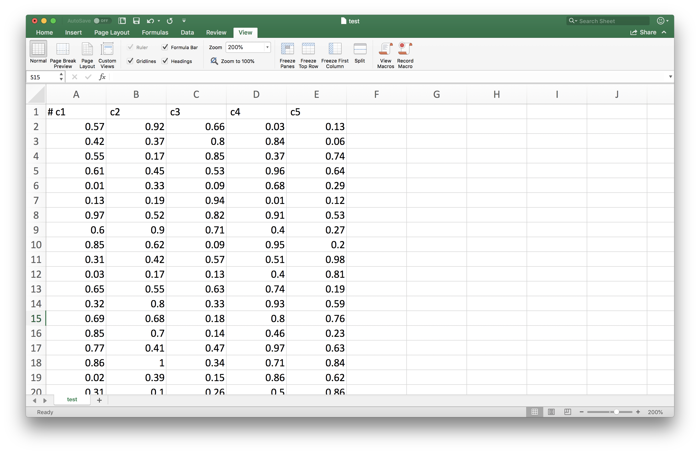
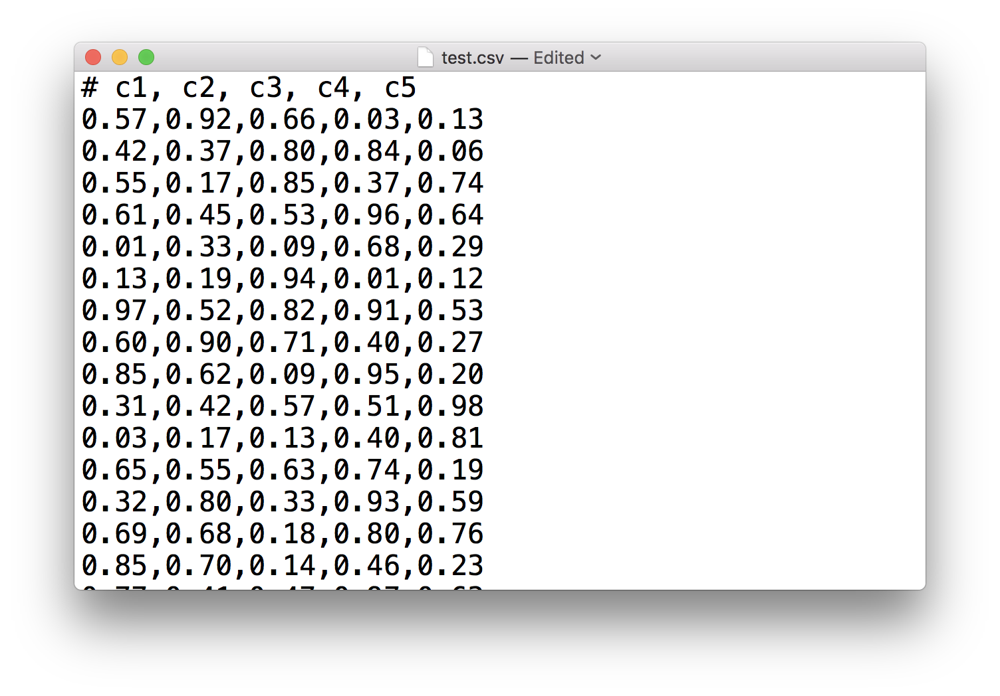

This notebook contains an excerpt from the An Introduction To Python Programming And Numerical Methods For Scientists and Engineers; the content is available on GitHub.
The text is released under the CC-BY-NC-ND license, and code is released under the MIT license. If you find this content useful, please consider supporting the work by buying the book!
< 11.1 TXT Files | Contents | 11.3 Pickle Files >
CSV Files¶
There are many scientific data are stored in the comma-separated values (CSV) file format, a delimited text file that uses a comma to separate values. It is a very useful format that can store large tables of data (numbers and text) in plain text. Each line (row) in the data is one data record, and each record consists of one or more fields, separated by commas. It also can be opened using Microsoft Excel, and visualize the rows and columns.
Python has its own csv module that could handle the reading and writing of the csv file, you can see the details in the documentation. But we are not going to introduce this csv module here. Instead, we will use the numpy package to deal with the csv file since many times we will read csv file directly to a numpy array.
Write and open a CSV file¶
Let’s see a simple example of generating 100 rows and 5 columns of data.
import numpy as np
data = np.random.random((100,5))
np.savetxt('test.csv', data, fmt = '%.2f', delimiter=',', header = 'c1, c2, c3, c4, c5')
We first generate the random data for 100 rows and 5 columns using the np.random function and assign it to data variable. We use the np.savetxt function to save the data to a csv file. We can see that the first 3 arguments are the same for the ones used in the previous section, but here we set the delimiter argument to ‘,’, which indicate that we want to separate the data using comma.
We can open the csv file using Microsoft Excel.

We can also open the csv file using a text editor, we could see the values are separated by the commas.

Read a CSV file¶
As before, we could read in the csv file using the np.loadtxt function. Let’s read in the csv file we just saved to the disk to a variable my_csv, and output the first 5 rows. Note here we use the delimiter again to specify that the data in the file is separated by commas.
my_csv = np.loadtxt('./test.csv', delimiter=',')
my_csv[:5, :]
array([[0.84, 0.99, 0.56, 0.24, 0.71],
[0.33, 0.8 , 0.32, 0.28, 0.83],
[0.89, 0.19, 0.25, 0.63, 0.84],
[0.08, 0.49, 0.76, 0.34, 0.69],
[0.66, 0.65, 0.73, 0.48, 0.12]])
Beyond Numpy¶
Numpy is very convenient to deal with csv files, but there are definitely more packages could handle csv files. A very popular one is the Pandas package that could easily deal with the tabular data in the Dataframe, you can check it out if you are interested in learning more.
< 11.1 TXT Files | Contents | 11.3 Pickle Files >